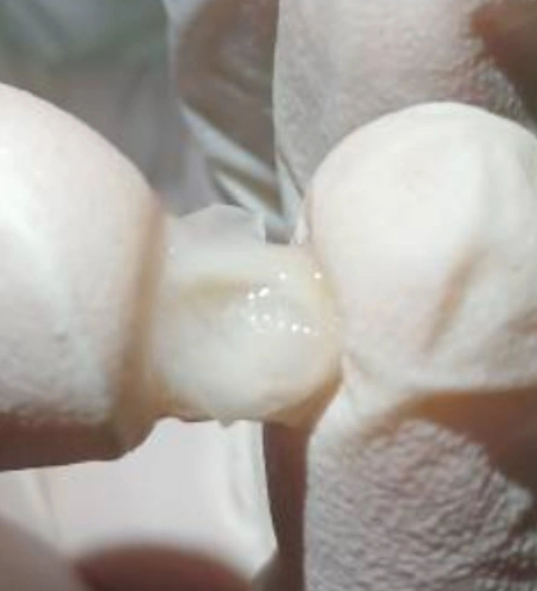

نسخه استخراجشده؛ ترجمه یا تأیید علمی انجام نشده است. وضعیت: captured
روکش ساخته شده است، اما وقتی آن را روی دندان یا اباتمنت میگذاری، ثبات ندارد و در موقعیت درستش قرار نمیگیرد. گاهی مشکل خود روکش نیست؛ این است که سر جایش نمینشیند. حالا چطور ارزیابیاش میکنی؟

وقتی روکش جای درست و position درست ندارد، عملاً هیچ ارزیابیای قابل اعتماد نیست:
چون هر چه میبینی، تصویر روکش در موقعیتی است که قرار نیست در آن بماند.
بین سطح داخلی روکش و دندان، چیزی نیست که گیر یا اصطکاک موقت ایجاد کند.
آنچه لازم داری نه سمان است، که برگشتناپذیر میشود، و نه هیچ مادهی دائمی دیگری؛ بلکه چیزی که فقط در همین مرحله روکش را در موقعیت درستش نگه دارد و بعد بهراحتی برداشته شود.
دستمال کاغذی خیس یک حالت ویسکوز بین روکش و دندان ایجاد میکند؛ لایهای نیمهچسبنده که روکش را در جای درستش نگه میدارد بدون آنکه قفلش کند.
حالا روکش بهاندازهی کافی ثابت و در موقعیت درست است که بتوانی ظاهر را ببینی، اکلوژن را چک کنی و تنظیمهای لازم را انجام دهی. در پایان، این لایه بهسادگی برداشته میشود.
پیش از هر چک، اول موقعیت را تثبیت کن؛ ارزیابی معتبر، با ارزانترین ابزار ممکن.